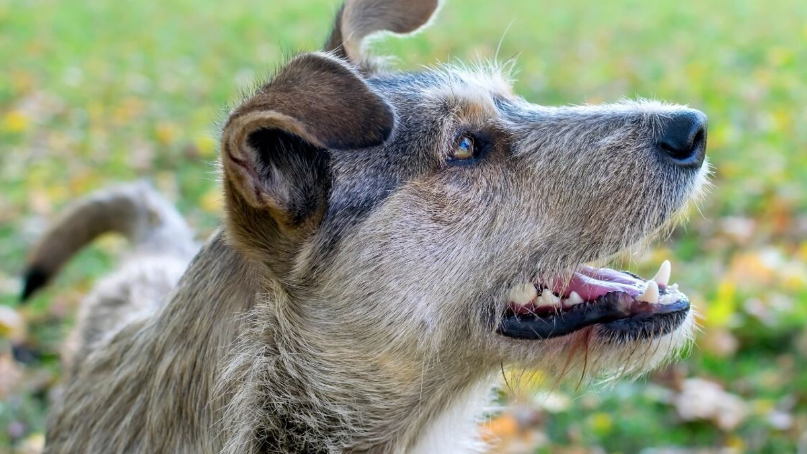

SERVICIOS

Adopcion

Esterilización

Donación
Cuando hablamos de perros criollos o mestizos, nos referimos a perros que no tienen características puras de raza ni estándares claros frente a audiencias oficiales. Varían en tamaño y pueden ir desde perros grandes hasta perros pequeños, con características de varias razas a la vez. Su crianza y superpoblación son mayoritariamente descontroladas y, lamentablemente, la mayoría se encuentran en las calles.
Afortunadamente, existen agencias que cuidan a estos perros abandonados y hacen el trabajo humanitario, rescatándolos, alimentándolos, higienizándolos y transformándolos para que puedan ser adoptados por personas sabias que quieran un buen perro. mascotas caseras.